CHAPTER NINETEEN

THE SMALL CARDS
Hang on. It's easier than you think!247
Now we turn our attention to the thirty-six small cards. In the ancient decks, these cards were called “pips” and were seldom more complex than simple geometrical arrangements of Wands, Cups, Swords, or Disks. Sometimes, the number of the card was printed on one or more corners, much like our modern playing cards. This changed dramatically with the introduction of secret images taught to initiates of the Golden Dawn, and the published deck suggested by Arthur Edward Waite and executed by Pamela Coleman Smith. Suddenly, the small cards had images that evoked feelings and emotions the same way the trumps did.
There is a big difference between the Golden Dawn images and those of the Waite/Smith deck. Waite, an influential member of the Golden Dawn, felt bound by his oaths of secrecy to the order never to reveal the correct and esoteric images and meanings of the tarot. The deck that he and Smith produced was created as a vehicle to introduce the mysteries, not to reveal them. They certainly succeeded. It is difficult to develop a complex or overly esoteric dogma around the deck, and for this I must admit Waite did a good job of not violating his vows. What I am not sure he foresaw was the fact that, over the years, the deck would become so wildly popular that its images would engender a perfectly viable self-referential divinatory device of its own. In other words, the Waite/Smith deck may not be the perfect Qabalistic tarot, but it is perfect whatever it is.
RECIPE FOR THE SMALL CARDS
The small cards of the Thoth Tarot take the Golden Dawn model as their basic standard and, when considering them, we are immediately confronted with the question of their titles and meanings. Why is the Two of Cups called Love and the Seven of Cups called Debauch? Why is the Ten of Wands Oppression and the Ten of Disks Wealth? Why are so many of the Swords horrible cards?
The answer is a simple formula containing two Qabalistic and two astrological factors. The formula is:
(n of s) + (p in zs) = sc
(Number of Suit) + (Planet in Zodiac Sign) = Small Card)
In chapter 9, we learned the basics concerning the ten sephiroth, YHVH, and the four Qabalistic Worlds. Now let's look at the astrological factors.
Let's start with the signs of the zodiac and their divisions by quadruplicities and triplicities.
QUADRUPLICITIES OF THE ZODIAC
The twelve signs of the zodiac are categorized, according to element into quadruplicities (four groups of three signs; see table 9). The four tarot suits are assigned to each as follows:
Wands: Fire signs (Aries, Leo, Sagittarius)
Cups: Water signs (Cancer, Scorpio, Pisces)
Swords: Air signs (Libra, Aquarius, Gemini)
Disks: Earth signs (Capricorn, Taurus, Virgo)
TRIPLICITIES OF THE ZODIAC
The twelve signs of the zodiac are categorized according to modes into triplicities (three groups of four signs; see table 10). The nine small cards of each suit are assigned in groups of three to each as follows:
Twos, Threes, Fours: Cardinal signs (Aries, Cancer, Libra, Capricorn)
Fives, Sixes, Sevens: Fixed signs (Leo, Scorpio, Aquarius, Taurus)
Eights, Nines, Tens: Mutable signs (Sagittarius, Pisces, Gemini, Virgo)
When we put the zodiac signs in order, we see the small cards are ordered in four repeating patterns of 2 through 10 (see table 11). Each small card represents one decan (period of 10°) of the zodiac, and approximately ten days of the year (see table 12).
Table 9. Small Cards Suits, Zodiac Signs and Elements
The small cards are allocated to the signs of the zodiac accordong to the element of their suit
(Wands to the Fire Signs; Cups to the Water Signs; Swords to the Air Signs; Disks to the Earth Signs)
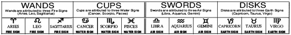
Table 10. Cardinal Signs, Fixed Signs, and Mutable Signs
The 2-3-4S of each suit represent the Cardinal Signs; The 5-6-7s, the Fixed Signs; the 8-9-10s, the Mutable Signs
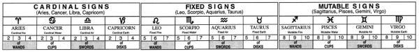
Table 11. Small Cards in Four Repeating Patterns of 2 Through 10
When we put the zodiac signs in order, we see the small cards are ordered in four repeating patterns of 2 through 10.
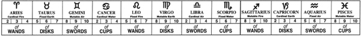
Table 12. Progression of the Small Cards Through the Zodiacal Year
Each small card represents 1 decan (period of 10 degrees) of the zodiac, and approximately 10 days of the year.
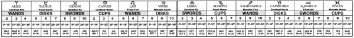
Table 13. Assignment of the Planets to the Small Cards
Starting at 0° Leo, planets are assigned in the following repeating order: Saturn, Jupiter, Mars, Sol, Venus, Mercury, Luna. This is the descending order of the planetary spheres on the Tree of Life. Mars repeats at the end of winter and the beginning of spring—an extra dose of energy to overcome winter.
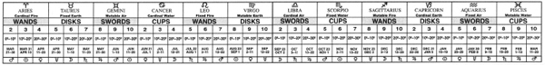
Table 14. The Court Cards Rule the Small Cards
Twelve of the Court Cards “rule” the Small Cards. The Knights, Queens, and Princes “rule” from zoo of one sign to zoo of the next.
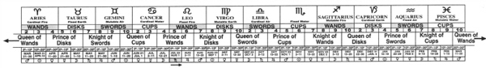
Table 15. Princesses: Thrones of the Aces and Rulers of Quadrants of Space
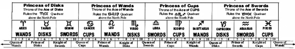
Now let's turn our attention to the planets.
THE PLANETS
Starting at 0° Leo, planets are assigned in the following repeating order:
Saturn
Jupiter
Mars
Sol
Venus
Mercury
Luna
This is the descending order of the planetary spheres on the Tree of Life (see Table 13).248
Astrologically speaking, an interesting and symbiotic relationship exists between the signs of the zodiac and the planets. First, each planet rules (or bestows its particular nature and character on) one or more signs of the zodiac. (For example; warlike and fiery Mars rules aggressive Aries and passionate Scorpio.) Second, there are certain signs of the zodiac that exalt a specific planet, almost as if it were an honored guest upon whom much attention and preference is bestowed. (For example: Aries, the ram of spring, exalts the Sun and welcomes its return from winter darkness.)
Because of the way the planets are allotted to the signs of the zodiac throughout the thirty-six small cards, we are bound to have some planets happy in their zodiacal homes and some zodiacal homes happy to host their planets. Conversely, some planets are decidedly unhappy in their zodiacal homes and some zodiacal homes are equally unhappy to host their planets. This astrological harmony or disharmony is a major factor in determining the characteristic meaning of a small card. It is great fun to peruse a good astrology book and match the aspects of the individual small cards with the descriptions of the character of people who have the same aspect in their natal charts. A perfect example is the Seven of Cups, which, in the Thoth Tarot, is called Debauch. It is Venus in Scorpio. Venus is not well dignified in Scorpio. Astrologer Joan Quiqley wrote of this aspect:
Common types with Venus in Scorpio dissipate relentlessly and are frequently degenerates or drunks. Most of you overdo when it comes to sex.249
What a perfect description of a tarot card whose traditional title is “Lord of Illusionary Success,” and that Crowley simply calls Debauch.
GOOD NEWS/BAD NEWS
Now we can couple the astrological factors with everything we've learned about the Tree of Life and the four Qabalistic worlds, and begin working out the nature of each small card. Unfortunately, while the formula is very simple, the interpretation is rather complex. As a matter of fact, it is very much like one of those jokes that starts out “I've got some good news, and I've got some bad news.”
Take the Seven of Disks, Failure, as an example:
- The good news is—we have Saturn in Taurus. Saturn is very happy in Taurus. It is one of the most stable match-ups of sign and planet imaginable.
- The bad news is that Saturn and Taurus find themselves in the seventh sephira, Netzach, and Netzach holds a horribly imbalanced position on the Tree of Life.
On the other hand:
- The good news is that Netzach is the sphere of Venus and Venus rules Taurus.
- The bad news is that all this is in Assiah, the lowest of the Qabalistic worlds, an environment so earthy that poor Venus is totally dethroned from her accustomed place in heaven. Add to that the fact that this is happening so low on the Tree of Life that the bad news is amplified to such a disastrous level that the good news is just not good enough to make any difference…and so we have FAILURE.
Or how about the Nine of Swords, Cruelty?
- The good news is that we find ourselves on the very stable ninth sephira, Yesod.
- The bad news is that Swords rule the mind and reason. Yesod is so low on the Tree of Life that all that good intellect has degenerated to heartless passion.
On the other hand:
- The good news is that we have very active Mars in very active Gemini.
- The bad news is that Mars and Gemini do not agree about how to be active. Mars is focused and directed; he attacks with the forward thrusts of a warrior. Gemini, on the other hand, is scattered and operates best while flitting around. This is very frustrating to Mars, who now, because he is totally unrestrained by intellect and reason, becomes downright mean. Voila! Cruelty!
In this chapter, I will talk briefly about each of the thirty-six small cards. As before, I will not hesitate to quote liberally from The Book of Thoth. But, as much as I respect Crowley's genius (and my own twisted insights), I want to encourage you to use the formula (n of s) + (p in zs) = sc to work out your own new and more innovative meanings for the small cards yourself. The more you learn about the Qabalah and astrology, the deeper your understanding of these cards will become. Go ahead. It's easier than you think.
TWO OF WANDS DOMINION
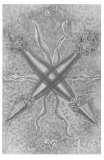
(Mars in Aries)
0° to 10° Aries
March 21 to March 30
Original Title: Lord of Dominion.
Golden Dawn Model: A hand appears from clouds and grasps two crossed wands. Flames appear where wands meet.
King Scale for Chokmah: Pure soft Blue.
The Four Scales for Mars: Scarlet; Red; Venetian Red; Bright Red, rayed Azure or Emerald.
The Four Scales for Aries: Scarlet; Red; Brilliant Flame; Glowing Red.
Formula: 2 (Chokmah) of Wands (Atziluth) + Mars in Aries = DOMINION
Following the basic Mathers design, the Two of Wands exhibits a textbook use of the color scale—the reds of Aries upon an explosive background of martial reds, azure, and emerald. The colors inform us in no uncertain terms that Mars is very happy in Aries and that Aries is happy to play host to Mars.
Crowley oberves that this strong astrological marriage in Chokmah (where the elements first manifest) makes the Two of Wands “fire in its best and highest form”250 and represents what he calls “Will in its most exalted form…ideal Will, independent of any given object.”251
The Wands are demon-headed Tibetan Dorjes.”252 Like the thunderbolt of Zeus, the Dorje represents the directed power of the gods, and serves as the instrument of divine destruction that must, of necessity, precede the creative cycle. “The virgin ovum,” Crowley claims, “must be broken in order to fertilize it.”253 The six flames bursting behind the Dorjes allude to the Sun,254 which is exalted in Aries and very happy to be there.
See chapter 20 for the general divinatory meanings of this card.
THREE OF WANDS VIRTUE
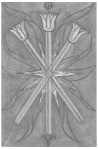
(Sol in Aries)
10° to 20° Aries
March 31 to April l0
Original Title: Lord of Established Strength.
Golden Dawn Model: A hand (as in the Two of Wands) appears from clouds, and grasps three wands in the center (two crossed, the third upright). Flames appear where wands meet.
King Scale for Binah: Crimson.
The Four Scales for Sol: Orange; Gold Yellow; Rich Amber; Amber, rayed Red.
The Four Scales for Aries: Scarlet; Red; Brilliant Flame; Glowing Red.
Formula: 3 (Binah) of Wands (Atziluth) + Sol in Aries = VIRTUE
Graphically, this card is one of the simplest in the entire deck, and holds closely to the Golden Dawn model. Harris skillfully uses each of the ten colors of the scales to present three gold-and-amber lotus wands trimmed in scarlet and set upon an orange background of brilliant flames. The effect is one, not only of brilliance, but of immense heat. It represents the primal solar energy that first penetrates the soil in spring to awaken seeds that have slumbered all winter.
Along with the aces and twos (the other two cards representing the supernal triad of the Tree of Life), Crowley holds all the threes in particular veneration. The aces are the unmanifest roots of their element and suit, and the twos represent the element and suit manifested as ideas. But with the threes, Crowley argues, “The idea has become fertilized; the triangle has been formulated. In each case, the idea is of a certain stability which can never be upset, but from which a child can issue.”255 In tarot, that child is the remaining small cards, fours through tens.
What a truly noble and well-aspected card this is. The Sun is in Aries, the sign of his exaltation, and couldn't be happier. Furthermore, this harmonious and energetic marriage takes place in the third sephira, Binah, adding sublime understanding to the mix. The great power (and the will to use that power) that we saw represented by the Two of Wands has now become fertilized and expressed in terms of character as Virtue.
See chapter 20 for the general divinatory meanings of this card.
FOUR OF WANDS COMPLETION
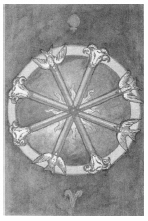
(Venus in Aries)
20° to 30° Aries
April 11 to April 20
Original Title: The Lord of Perfected Work.
Golden Dawn Model: Two hands appear from clouds right and left of the card and clasp in the center with the grip of the First Order. They hold four wands or torches crossed. Flames appear where wands meet.
King Scale for Chesed: Deep Violet.
The Four Scales for Venus: Emerald Green; Sky Blue; Early Spring Green; Bright Rose or Cerise, rayed Pale Green.
The Four Scales for Aries: Scarlet; Red; Brilliant Flame; Glowing Red.
Formula: 4 (Chesed) of Wands (Atziluth) + Venus in Aries = COMPLETION
As we learned in our discussion of Atu X, Fortune, in the fourth sephira, Chesed, the gunas revolve. And so, even though it is a total departure from the Golden Dawn model, Harris creates a rotating wheel by transforming four wands into eight spokes of the wheel of Completion. Each wand is balanced and perfectly complemented with a dove of Venus and the ram of Mars-ruled Aries. Venus in Aries, Crowley points out, “indicates that one cannot establish one's work without tact and gentleness.”256 Harris ignores the deep violet of Chesed and focuses upon the greens and reds of this planet and sign.
Chesed is fourth sephira, but it is the first one below the Abyss. Consequently, the fours of the tarot represent the first solid manifestation of their suits. This is the classic characteristic of the Demiurge (Demiourgos)—a god who, as we learned in chapter 8, is, by all appearances, the first principal and creator of its universe, but who, in reality, is only the fourth principal and completely unaware of the three abstract principals (gods) that preceded it.
Zeus, Ammon, Jupiter, Jove, and Jehovah are classic examples of the Demiurge, who thinks he is god, but who is really only the visible manifestation of the invisible primal forces that created him. Nevertheless, the Demiurge brings order and the rule of law to the universe, a characteristic that is shared by all the small-card fours.
See chapter 20 for the general divinatory meanings of this card.
FIVE OF WANDS STRIFE
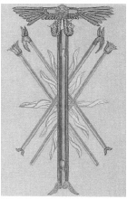
(Saturn in Leo)
0° to 10° Leo
July 22 to August 1
Original Title: Lord of Strife.
Golden Dawn Model: Two hands (one from each side of the card) appear from clouds and clasp in the center with the grip of the First Order. They hold four wands, crossed two over two. A third hand appears from a cloud at the lower part of the card, holding an upright wand, which passes between the others. Flames flash where wands meet.
King Scale for Geburah: Orange.
The Four Scales for Saturn: Indigo; Black; Blue-black; Black, rayed Blue.
The Four Scales for Leo: Yellow (greenish); Deep Purple; Grey; Reddish Amber.
Formula: 5 (Geburah) of Wands (Atziluth) + Saturn in Leo = STRIFE
In The Book of Thoth, Crowley writes more about the Five of Wands than any other small card in this suit. Could it be because this card represents the first decan of Leo, which happens to be where we find the Ascendant in Crowley's astrological natal chart? Crowley identified strongly with Leo. His signature even bore the astrological sign of Leo in place of the “A” of Aleister.
This is one of only three cards on which Crowley literally left his mark. If we look closely at the orb of the winged solar disk atop the large version of the Chief Adept's wand in the center of the card, we find the image of Crowley's personal magical device, the Mark of the Beast upon the seven-pointed star of Babalon. This symbol is the device of the Ace of Disks (by tradition, one of the cards that most often bears the signature of the deck's creator) and the Prince of Wands, who also rules the 30° period in which we find Crowley's Ascendant.
Like Crowley himself, this card is a wild mix of profound contradictions: fiery Leo is happy enough in fiery Geburah, and Geburah implies motion and offers an environment of strength and activity. Saturn, on the other hand, presents a heavy and constant resistance to all this. This card is a picture of hot, pressurized magma struggling to reach the surface of the volcano, but frustrated by the sheer weight of the mountain itself
See chapter 20 for the general divinatory meanings of this card.
SIX OF WANDS VICTORY
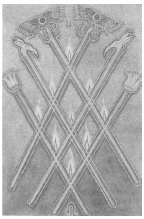
(Jupiter in Leo)
10° to 20° Leo
August 2 to August 11
Original Title: Lord of Victory.
Golden Dawn Model: Two hands appear from clouds right and left of the card and clasp in the center with the grip of the First Order. They hold six wands, crossed three and three. Flames appear where wands meet.
King Scale for Tiphareth: Clear Pink Rose.
The Four Scales for Jupiter: Violet; Blue; Rich Purple; Bright Blue, rayed Yellow Emerald.
The Four Scales for Leo: Yellow (greenish); Deep Purple; Grey; Reddish Amber.
Formula: 6 (Tiphareth) of Wands (Atziluth) +Jupiter in Leo = VICTORY
The Six of Wands is called Victory; the Six of Cups is Pleasure; the Six of Swords is Science; and the Six of Disks is Success. all the sixes are wonderful cards. What gives? Are the four sixes special? You bet they are!
On the Tree of Life, Tiphareth is the direct reflection of Kether. It is the Son of the Father. It is perfectly balanced, left to right and top to bottom. It is the heart center of our psychic bodies and the Ruach of our souls. It rules as the central Sun King, surrounded by the spheres of the planets: Chesed (Jupiter), Geburah (Mars), Netzach (Venus), Hod (Mercury), Yesod (Moon), and even Binah (Saturn). Consequently, no matter how incompatible the card's planetary and zodiacal relationship may be, if that card is a six, we are in Tiphareth, and if we are in Tiphareth we're looking good.
In the case of the Six of Wands, we are doubly blessed with the happy marriage of expansive, boisterous, and generous Jupiter in powerful Sun-ruled Leo. This is the recipe for triumphant Victory.
This card is a relatively faithful version of the Golden Dawn model. The wands are a bit more elaborate and represent those used by various GD officers. The two topped with winged solar disks are those of the Chief Adept, the others are clearly Phoenix and Lotus wands.
See chapter 20 for the general divinatory meanings of this card.
SEVEN OF WANDS VALOUR
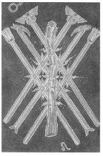
(Mars in Leo)
20° to 30° Aries
August 12 to August 22
Original Title: Lord of Valour.
Golden Dawn Model: Two gripped hands holding six wands, three are crossed. A third hand appears from a cloud at the lower part of the card, holding an upright wand, which passes between the others. Flames flash where wands meet.
King Scale for Netzach: Amber.
The Four Scales for Mars: Red; Venetian Red; Bright Red, rayed Azure or Emerald.
The Four Scales for Leo: Yellow (greenish); Deep Purple; Grey; Reddish Amber.
Formula: 7 (Netzach) of Wands (Atziluth) + Mars in Leo = VALOUR
The background of the Seven of Wands is deep purple, but, other than that, this card is a near carbon copy of the Six of Wands. A crude seventh wand, more like a club, overshadows the other six and delivers a sobering message: “The four Sevens are not capable of bringing any comfort; each one represents the degeneration of the element. Its utmost weakness is exposed in every case.”257
There is still enough power and energy in the Seven of Wands to slug it out. But the situation has degenerated into such a mess that nobody is sure with whom to slug it out! It may be that a blow here or there will find its mark, but, more times than not, it's a waste of energy. Crowleys sums it up aphoristically, “Patriotism, so to speak, is not enough.”258
Warlike Mars may find a measure of moral support in proud and fiery Leo, but machismo is a tragic joke this far down the Tree of Life in the weak and unbalanced environment of Netzach (natural home of sensitive, peace-loving Venus). The high art of battle has been replaced with the chaos of a mindless melee. “The army,” Crowley observes, “has been thrown into disorder; if victory is to be won, it will be by dint of individual valour—a ‘soldiers' battle.”259
See chapter 20 for the general divinatory meanings of this card.
EIGHT OF WANDS SWIFTNESS
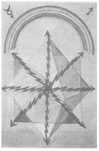
(Mercury in Sagittarius)
0° to 10° Sagittarius
November 23 to December 2
Original Title: Lord of Swiftness.
Golden Dawn Model: Four hands (two from each side of the card) appear from clouds; clasped in two pairs in the center with the grip of the First Order. They hold eight wands, crossed four with four. Flames appear where wands meet.
King Scale for Hod: Violet.
The Four Scales for Mercury: Yellow; Purple; Grey; Indigo, rayed Violet.
The Four Scales for Sagittarius: Blue; Yellow; Green; Dark vivid Blue.
Formula: 8 (Hod) of Wands (Atziluth) + Mercury in Sagittarius = SWIFTNESS
If this card doesn't electrocute you, it may tickle you to death. Harris departs dramatically from the Golden Dawn model, and offers us a portrait of energy becoming matter: “Light-wands turned into electrical rays, sustaining or even constituting Matter by their vibrating energy.”260 Without mentioning Einstein or the formula e=mc2, Crowley goes so far as to state, “This card, therefore, represents energy of high velocity, such as furnishes the master-key to modem mathematical physics.”261
Swiftness is the perfect title for this card, because it represents everything that requires speed and a high-frequency level to hold together, whether that be a business endeavor, a romance, or the sum of all the matter in the universe. All this is fine and good, but what does all that mean when this card appears in a tarot reading? Let's look at the formula.
Mercury is in Sagittarius, where the element fire has become stabilized, and is eminently comfortable. This partnership is doubly energized by being in Hod, the sphere of Mercury. Even Hod's low and unbalanced position on the Tree of Life does little to diminish the intense activity of this almost overly stimulated coupling. This card is like two people who have had too much coffee who stay up all night, talking simultaneously. A lot may be said. A lot may be learned. But, inevitably, they are both going to crash.
See chapter 20 for the general divinatory meanings of this card.
NINE OF WANDS STRENGTH
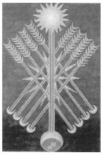
(Moon in Sagittarius)
10° to 20° Sagittarius
December 3 to December 12
Original Title: Lord of Great Strength.
Golden Dawn Model: Four hands (two from each side of the card) appear from clouds; clasped in two pairs in the center with the grip of the First Order. They hold eight wands, crossed four over four. A fifth hand appears from the bottom center of the card holding a ninth wand upright, which crosses the point of junction with the others. Flames flash where wands meet.
King Scale for Yesod: Indigo.
The Four Scales for Moon: Blue; Silver; Cold Pale Blue; Silver, rayed Violet.
The Four Scales for Sagittarius: Blue; Yellow; Green; Dark vivid Blue.
Formula: 9 (Yesod) of Wands (Atziluth) + Moon in Sagittarius = STRENGTH
Holding very close to the Golden Dawn description and color scales, the Nine of Wands tells its story in almost quiet simplicity. Eight of the wands are arrows, each of which has a crescent Moon as the head and eight Moons for feathers. The great central wand, with the Sun at its top and the Moon at its bottom, represents the path of Sagittarius on the Tree of Life, which joins Tiphareth (Sun) to Yesod (Moon). “Here the Moon,” Crowley writes, “the weakest of the planets, is in Sagittarius, the most elusive of the Signs; yet it dares call itself Strength”262
The source of this confident strength is the card's position in Yesod on the Tree of Life. Not only is Yesod the natural sephira of the Moon (making our Moon here very comfortable—even if it is in Sagittarius), it is also the Foundation, the “seat of the great crystallization of Energy.”263 As Crowley observes, “The Nine represents always the fullest development of the Force in its relation with the Forces above it.”264
This card indicates great strength, but its strength lies in its ability to change perpetually. Crowley gave what is perhaps the simplest meaning of this card when he wrote: “Defense, to be effective, must be mobile.”265
See chapter 20 for the general divinatory meanings of this card.
TEN OF WANDS OPPRESSION
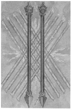
(Saturn in Sagittarius)
20° to 30° Sagittarius
December 13 to December 21
Original Title: Lord of Oppression.
Golden Dawn Model: Four hands (two from each side of the card) appear from clouds; clasped in two pairs in the center with the grip of the First Order. They hold eight wands, crossed four with four. A fifth hand appears from the bottom center of the card holding a ninth and tenth wand upright, which cross the point of junction with the others. Flames flash where wands meet.
King Scale for Malkuth: Yellow.
The Four Scales for Saturn: Indigo; Black; Blue-black; Black, rayed Blue.
The Four Scales for Sagittarius: Blue; Yellow; Green; Dark vivid Blue.
Formula: 10 (Malkuth) of Wands (Atziluth) + Saturn in Sagittarius = OPPRESSION
All factors conspire to make this an altogether unpleasant card. Saturn's iron heel brutally pins poor Sagittarius (the lightest and most ethereal of the fire signs) to the floor of inflexible Malkuth. If zodiac signs could dream, the Ten of Wands would be Sagittarius's worst nightmare. Harris basically follows the Golden Dawn model with this card, and is meticulously faithful to the color scales. That, however, is where the similarities end. Her Ten of Wands is an explosive and suffocating image of oppression and repression.
Crowley writes that Malkuth, “depends from the other nine Sephiroth, but is not directly in communication with them. It is become a blind Force; so, the most violent form of that particular energy, without any modifying influences.”266 Blind force, Crowley points out, in the suit of Wands means “Fire in its most destructive aspect.”267
Harris ingeniously illustrates this by transforming the two Dorjes (which in the Two of Wands were the symbols of celestial power) into dark iron prison bars. Crowley describes the card thus:
The whole picture suggests oppression and repression. It is a stupid and obstinate cruelty from which there is no escape. It is Will which has not understood anything beyond its dull purpose, its “lust of result”, and will devour itself in the conflagrations it has evoked.”268
See chapter 20 for the general divinatory meanings of this card.
TWO OF CUPS LOVE
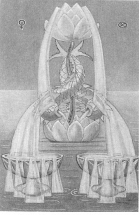
(Venus in Cancer)
0° to 10° Cancer
June 21 to July 1
Original Title: Lord of Love.
Golden Dawn Model: From cloud and water at the bottom, a hand appears holding by a single stem two lotuses, one rising vertically from the other. Upon the stem between the lotuses two dolphins cross. Two fountains of water (silver to the left, gold to the right) spring from the top lotus and fall upon the dolphins then down into two cups, which in turn overflow and flood the bottom of the card.
Queen Scale for Chokmah: Grey.
The Four Scales for Venus: Emerald Green; Sky Blue; Early Spring Green; Bright Rose or cerise, rayed Pale Green.
The Four Scales for Cancer: Amber; Maroon; Rich bright Russet; Dark Greenish Brown.
Formula: 2 (Chokmah) of Cups (Briah) + Venus in Cancer = LOVE
The Two of Cups is perhaps the most beautiful of the small cards of the Thoth Tarot. While Harris doesn't completely ignore the color scales, she does give herself room for innovation. The calm green sea, the rose-colored lotuses, and the amber dolphins (or are they Koi?) conform nicely, but she breaks rank a bit by giving us a violet sky. The card is magnificently beautiful and a fitting representative of the first manifestation of the element water. It is the energy of water in its best and highest form.
Harris shows her appreciation of the card by sharing a perhaps apochryphal event involving the card: “Also [at the exhibition] a little person aged 2, scuttling & crawling, was asked which picture: Straight she went to No. 2 Cups, Love. I thought she would forget &asked her again 10 minutes later &she toddled off to the same Picture. “That” she said again.269
Because the number two (Chokmah on the Tree of Life) is particularly expressive of Will, Crowley wrote:
This card might really be renamed the Lord of Love under Will for that is its full and true meaning. It shows the harmony of the male and the female: interpreted in the largest sense. It is perfect and placid harmony, radiating an intensity of joy and ecstasy.270
See chapter 20 for the general divinatory meanings of this card.
THREE OF CUPS ABUNDANCE
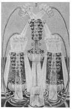
(Mercury in Cancer)
10° to 20° Cancer
July 2 to July 11
Original Title: Lord of Abundance.
Golden Dawn Model: A hand appears from clouds at the bottom of the card, and grasps the stems of four lotuses or water lilies. Two flowers rise to the right and left and overhang two cups. The third and fourth flowers arise between the lower two and overhang and pour water into a single cup at the top of the card. The top cup overflows in two streams that fill and overflow the lower two cups.
Queen Scale for Binah: Black.
The Four Scales for Mercury: Yellow; Purple; Grey; Indigo, rayed Violet.
The Four Scales for Cancer: Amber; Maroon; Rich bright Russet; Dark Greenish Brown.
Formula: 3 (Binah) of Cups (Briah) + Mercury in Cancer = ABUNDANCE
The three factors of our formula conspire to create a marriage made in heaven. “Mercury is the Will or Word of the All-Father,” Crowley states. “Here its influence descends upon the most receptive of the Signs.”271
In an exuberant interpretation of the Golden Dawn model, Harris fills the surface of the Three of Cups to overflowing. The images crowd to the very edges of the card. Her choice of colors is drawn directly from the dictated scales with one stunning exception—the bright red pomegranate cups. They are elevated above a tranquil sea by lotuses and filled with living water by other overhanging lotus blossoms. Crowley calls this the card of Demeter and Persephone and “the fulfillment of the Will of Love in abounding joy. It is the spiritual basis of fertility.”272
One could not ask for a more perfect picture of sensuous pleasure and plenty. The imagery of the pomegranates, however, carries a subtle warning. Abundance has its price. Because she swallowed a few seeds of the pomegranate, Persephone was obliged to spend part of every year in the dark realms of her husband, Pluto, the Lord of the Dead. None of the Gods of Olympus, not even great Zeus, could break the spell. Crowley interprets it thus: “The lesson seems to be that the good things of Life, although enjoyed, should be distrusted.”273
See chapter 20 for the general divinatory meanings of this card.
FOUR OF CUPS LUXURY
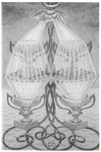
(Moon in Cancer)
20° to 30° Cancer
July 12 to July 21
Original Title: Lord of Blended Pleasure.
Golden Dawn Model: A hand appears from clouds at the bottom of the card grasping three stems of a lotus. Two green leaves grow from the right and left stems, forming a cross between four cups arranged as a square. The center stem flowers at the top of the card. Two streams of water flow right and left from the flower, filling the top two cups, which overflow and fill the two lower cups.
Queen Scale for Chesed: Blue.
The Four Scales for Moon: Blue; Silver; Cold Pale Blue; Silver, rayed Sky Blue.
The Four Scales for Cancer: Amber; Maroon; Rich bright Russet; Dark Greenish Brown.
Formula: 4 (Chesed) of Cups (Briah) + Moon in Cancer = LUXURY
This card is really loaded. As a matter of fact, it borders on being too much of a good thing. Just look at the formula: four is Chesed, the sphere of generous, expansive, and beneficent Jupiter. Jupiter is exalted in Cancer, and Cancer is ruled by the Moon. Can the components of one card get any cozier? No, but, in this case, familiarity is starting to breed contempt and eventually enough will be enough. When this card appears in a reading, enjoy the moment, but don't expect it to last forever.
The sea that was so still in the Three of Cups is now restless. The Cups have become heavy, the bottom two have sunk to the water's surface and are resting precariously on the lotus stems themselves; the upper two cups have actually flattened out the lotus blossoms and are threatening to collapse the entire plant. The source of the water, the single blossom at the top of the card, is wilted and has lost several petals. It gives the appearance that it is about to run out of juice. I believe it is.
Like the Demiurge itself, the Four of Cups, in its self-absorbed arrogance, thinks Luxury is the god of the suit of Cups—all the while never dreaming that it owes its very existence to the sublime true gods of the supernal triad, the Ace, Two, and Three of Cups.
See chapter 20 for the general divinatory meanings of this card.
FIVE OF CUPS DISAPPOINTMENT
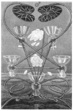
(Mars in Scorpio)
0° to 10° Scorpio
October 23 to November 1
Original Title: Lord of Loss in Pleasure.
Golden Dawn Model: A hand appears from clouds at the bottom of the card holding lotuses or water lilies. Flowers fall right and left and overhang five cups arranged as a square with one in the center. The lotus stem ascends between the cups as a fountain. No water comes from the flowers. All the cups are empty.
Queen Scale for Geburah: Scarlet Red.
The Four Scales for Mars: Scarlet; Red; Venetian Red; Bright Red, rayed Azure or Emerald.
The Four Scales for Scorpio: Green Blue; Dull Brown; Very dark Brown; Livid Indigo Brown.
Formula: 5 (Geburah) of Cups (Briah) + Mars in Scorpio = DISAPPOINTMENT
With this card, the suit of Cups takes a dramatic and sinister turn. This is very disappointing, because the Five of Cups had so much going for it. Discarding the configuration of the Golden Dawn model that displays five empty cups arranged as a square with one cup in the center, Crowley has Harris arrange her cups as an inverted pentagram, symbol (in this place) of the triumph of matter over spirit.
What is it that turns this card sour? Mars rules Scorpio and is very happy to be there. Not only that: all this is in Geburah, the hometown, the sphere of Mars. So where's the problem?
The problem stems from the fact that Mars is too happy to be here. He gets himself too excited to indulge in foreplay. This makes Scorpio nervous. He ends up prematurely blowing such a fiery blast upon the relationship that it retards what might have otherwise been the slow processes of passionate decay that Scorpio uses to devour and liberate her lovers. Who among us cannot understand this?
Water no longer pours into the cups; the lotus blossoms have been completely blown away by the hot martial wind that has turned the sky red. The sea is now a stagnating pool. Now we can see where the earlier small cards in this suit were taking us. Love leads to Abundance, which (left uncontrolled) leads to Luxury, which (left uncontrolled) leads to decadence, boredom, frustration and—Disappointment.
See chapter 20 for the general divinatory meanings of this card.
SIX OF CUPS PLEASURE
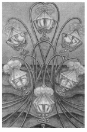
(Sol in Scorpio)
10° to 20° Scorpio
November 2 to November 12
Original Title: Lord of Pleasure.
Golden Dawn Model: A hand appears from clouds at the bottom of the card and holds a group of stems of lotuses or water lilies, from which six flowers bend, one over each cup. Water flows from these flowers into the cups as if from a fountain. The cups are not yet fall.
Queen Scale for Tiphareth: Yellow (gold).
The Four Scales for Sol: Orange; Gold Yellow; Rich Amber; Amber, rayed Red.
The Four Scales for Scorpio: Green Blue; Dull Brown; Very dark Brown; Livid indigo Brown.
Formula: 6 (Tiphareth) of Cups (Briah) + Sun in Scorpio = PLEASURE
Balance returns to the suit as the Six of Cups, Pleasure, finds a most delightful home in Tiphareth, the sphere of the Sun. The Four and Five of Cups seem like bad dreams (probably brought on by consuming too much rich food and wine), and we now awaken to the giddy realization that we are the card that is the direct reflection of the Ace of Cups on the Tree of Life. The Sun is outrageously happy to be in Tiphareth and shines with double warmth and pleasantness on the sensuous and fun-loving side of Scorpio. If this is the first card you draw in a tarot reading, you may want to stop right there and quit while you're ahead. This is a terrific card. Crowley agrees:
Pleasure, in the title of this card, must be understood in its highest sense: it implies well-being, harmony of natural forces without effort or strain, ease, satisfaction. Foreign to the idea of the card is the gratification of natural or artificial desires. Yet it does represent emphatically the fulfillment of the sexual Will, as shown by the ruling Sephira, planet, element, and sign.274
The sea is alive with broad gentle waves, and the lotuses actually dance, leaving stem trails of perfectly symmetrical patterns and arcs. Water is again pouring into the cups from lotus blossoms, but, as yet, the cups are not filled. Four of the cups are tilted and appear ready to fall, but they are pressed securely against the stems by the generous water pressure from above.
See chapter 20 for the general divinatory meanings of this card.
SEVEN OF CUPS DEBAUCH
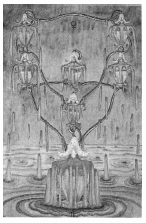
(Venus in Scorpio)
20° to 30° Scorpio
November 13 to November 22
Original Title: Lord of Illusionary Success.
Golden Dawn Model: The cups are arranged as two descending triangles above a point: a hand holds lotus stems, which arise from a central lower cup. The hand is above this cup and below the middle one. With the exception of the central lower cup, each is overhung by a lotus flower, but no water falls from any of the flowers. All the cups are empty.
Queen Scale for Netzach: Emerald.
The Four Scales for Venus: Emerald Green; Sky Blue; Early Spring Green; Bright Rose or Cerise, rayed Pale Green.
The Four Scales for Scorpio: Green Blue; Dull Brown; Very dark Brown; Livid Indigo Brown.
Formula: 7 (Netzach) of Cups (Briah) + Venus in Scorpio = DEBAUCH
Crowley is definitely not a fan of the Seven of Cups:
This is one of the worst ideas that one can have; its mode is poison, its goal madness. It represents the delusion of Delirium Tremens and drug addiction; it represents the sinking into the mire of false pleasure. There is something almost suicidal in this card.275
Just look at this card—if you can. Yuck! What happened to all that great Cup stuff higher up on the Tree of Life? Doesn't sexy Venus like to show off in sexy Scorpio? She does. She likes to show off everywhere! Venus, however, is not well dignified in Scorpio and often embarrasses herself when she visits.
You ask, shouldn't she be happy in Netzach, the sphere of Venus? Sure she is! She's so happy she's making herself sick. This is much-too-much of what was once a good thing and, this low on the tree and this far off balance, there isn't a single influencing factor left to remind her the party's over.
This card seems like the next logical step in the Abundance, Luxury, Disappointment sequence. Three martinis is abundantly enough; four is just the luxury of showing off; five is disappointing because you're not getting high any more, you're just getting smashed. But after seven—oh dear! The Seven of Cups is a stumbling dash to the lavatory just moments after you thought you were being irresistible to an attractive stranger.
See chapter 20 for the general divinatory meanings of this card.
EIGHT OF CUPS INDOLENCE
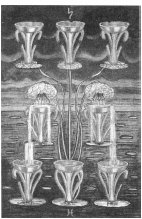
(Saturn in Pisces)
0° to 10° Pisces
February 19 to February 28
Original Title: Lord of Abandoned Success.
Golden Dawn Model: From clouds at the bottom of the card a hand appears, holding the stems of lotuses or water lilies. There are only two flowers that bend over and fill to overflowing the two central cups. The overflow pours into (but does not fill) the three lowest cups. There are three cups above the two central cups, which remain empty.
Queen Scale for Hod: Orange.
The Four Scales for Saturn: Indigo; Black; Blue-black; Black, rayed Blue.
The Four Sales for Pisces: Crimson (ultra Violet); Buff, flecked silver White; Light Translucent pinkish Brown; Stone color.
Formula: 8 (Hod) of Cups (Briah) + Saturn in Pisces = INDOLENCE
Much to my wife's disappointment (this is her birthday card), Crowley didn't have much nice to say about the Eight of Cups. In fact, he called it “the German Measles of Christian Mysticism.”276 and “the very apex of unpleasantness.”277
Is it any wonder? This card has a bad attitude (Sorry, Dear). Saturn is a heavy and hard-nosed downer and, this far down the Tree of Life, delicate Pisces doesn't have enough juice left to put up any kind of fight. This card will have you “playin' solitaire till dawn, with a deck of 51.”278
Crowley's description of this unfortunate blending of forces is priceless:
This card represents a party for which all preparations have been made; but the host has forgotten to invite the guests; or the caterers have not delivered the good cheer. There is this difference, though, that it is in some way or other the host's own fault.279
Harris's interpretation of lndolence is perfect—a stagnant pool, drooping blossoms. The top three cups and one at the bottom of the card are empty; the two in the center are spilling half their contents back into the sea.
See chapter 20 for the general divinatory meanings of this card.
NINE OF CUPS HAPPINESS
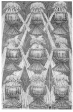
(Jupiter in Pisces)
10° to 20° Pisces
March 1 to March 10
Original Title: Lord of Material Happiness.
Golden Dawn Model: A hand appears from clouds at the bottom of the card holding the stem of lotuses or water lilies, one flower of which overhangs each of nine cups arranged in three rows of three.
Queen Scale for Yesod: Violet.
The Four Scales for Jupiter: Violet; blue; rich Purple; Bright Blue, rayed Yellow.
The Four Sales for Pisces: Crimson (ultra Violet); Buff, flecked silver White; Light Translucent pinkish Brown; Stone color.
Formula: 9 (Yesod) of Cups (Briah) +Jupiter in Pisces = HAPPINESS
Is everybody happy? Yes!
See what happens when we return to the stability of the middle pillar? This is one of the best cards in the deck. Pisces, being the mutable sign of water, tends to stabilize the element. She is most welcome in Yesod, the sphere of the watery Moon. Yesod is also the Foundation, the sephira that stabilizes the entire Tree of Life. This provides a most cozy and satisfying environment for loveable Jupiter to happily enjoy the good life as only Jupiter and his friends can.
Jupiter also has an affinity to water. Chesed, the sphere of Jupiter, Crowley affirms, “represents Water in its highest material manifestation.”280
Everybody is, literally, happy!
Harris follows the color scales and pumps up the Golden Dawn model by straightening her streams of flowing water as if they were spurting from the lotus flowers and gushing under pressure into large-bowled cups. The whole image is one of voluptuous, surreal Victorian clutter. There is hardly room for her to include the symbols of Jupiter and Pisces at the top and bottom of the card.
See chapter 20 for the general divinatory meanings of this card.
TEN OF CUPS SATIETY
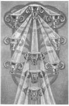
(Mars in Pisces)
20° to 30° Pisces
March 11 to March 20
Original Title: Lord of Perfected Happiness.
Golden Dawn Model: A hand appears from clouds at the bottom of the card, holding the stem of lotus or water lilies whose flowers pour water into all the cups, which al spill over. The top cup is held sideways by another hand, and pours water into the left-hand upper cup. A single lotus flower rises above the top cup, and is the source of the water that fills it.
Queen Scale for Malkuth: Citrine; Olive; Russet; and Black.
The Four Scales for Mars: Scarlet; Red; Venetian Red; Bright Red, rayed azure or emerald.
The Four Scales for Pisces: Crimson (ultra Violet); Buff, flecked silver White; Light Translucent pinkish Brown; Stone color.
Formula: 10 (Malkuth) of Cups (Briah) + Mars in Pisces = SATIETY
Crowley advised Harris on the composition of this card, writing:
The background; it ought to look menacing. There is something very sinister about this card. It suggests the morbid hunger which springs from surfeit. The craving of a drug addict is the idea. At the same time, of course, it is this final agony of descent into illusion which renders necessary the completion of the circle by awakening the Eld of the All-Father.281
—Crowley to Harris, December 19, 1939.
Had enough? The Ten of Cups could have been filled with the realization of the potential of the suit of Cups. Instead, it is just filled with the concept of fullness. The cups have runneth over and are staining the carpet.282 Crowley blames this on Mars in Pisces:
Mars is the gross, violent and disruptive force which inevitably attacks every supposed perfection. His energy displays the greatest possible contrast with that of Pisces, which is both peaceful and spiritualized.283
This is the end of the line for the suit of water. Harris ignores the Golden Dawn model and coloring guidelines and creates a Tree of Life from ten rather disturbed and tipsy cups.
See chapter 20 for the general divinatory meanings of this card.
TWO OF SWORDS PEACE
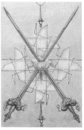
(Moon in Libra)
0° to 10° Libra
September 23 to October 2
Original Title: Lord of Peace Restored.
Golden Dawn Model: Two hands appear from clouds at the right and left side of the card. They hold two swords like the air dagger of a Zelator Adeptus Minor. The swords cross in the center of the card. A red rose with five petals blooms where the swords touch. The rose emits white rays.
Prince Scale for Chokmah: Blue pearl gray, like mother of pearl.
The Four Scales for Moon: Blue; Silver; Cold Pale Blue; Silver, rayed Sky Blue.
The Four Scales for Libra: Emerald Green; Blue; Deep Blue-Green; Pale Green.
Formula: 2 (Chokmah) of Swords (Yetzirah) + Moon in Libra = PEACE
Harris has not strayed very far from the basic Golden Dawn model in this card. She has replaced the red rose with a deep blue-green blossom (Libra), and she forms a stylized Greek cross using the geometrical wings we first encountered on the Princess of Swords. These wings also festoon the backgrounds of the other cards of this suit.
Astrologers tell us that people who were born with Moon in Libra criticize and make judgments from a position of enviable equilibrium. They weigh every problem and proposition with the utmost fairness. This fortunate union of sign and planet finds a predictably dignified home in Chokmah. The result is one of the few cards in the suit of Swords that doesn't evoke groans when it appears in a tarot reading.
That is not to say that it is all goodness and light. We must remember that the natural vocation of a sword is to fight, to cut, to pierce, to kill. It is an instrument of action. Just like the mind, just like the Ruach, the intellectual part of the soul, it is in constant movement.
Eastern mystics tell us that the mind is the great enemy. If we are to achieve profound levels of consciousness, the mind must be overcome. Fearful that its existence and control will end, the mind resists these efforts at all costs. This is why so many cards in the suit of Swords seem so frustrated, anxious, nervous, even tortured.
In the case of the Two of Swords, Peace, it seems we've dodged a bullet. We must always remember, however, that for the sharp and dangerous sword, peace is just an uncharacteristic and temporary interruption from war.
See chapter 20 for the general divinatory meanings of this card.
THREE OF SWORDS SORROW
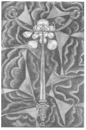
(Saturn in Libra)
10° to 20° Libra
October 3 to October 12
Original Title: Lord of Sorrow.
Golden Dawn Model: Three hands holding three swords appear from clouds at the bottom of the card. The image is that of the Two of Swords, but the right and left swords are violently parted by a central third sword. The rose is destroyed and its five petals are dispersed into the air. There are no white rays.
Prince Scale for Binah: Dark Brown.
The Four Scales for Saturn: Indigo; Black; Blue-black; Black, rayed Blue.
The Four Scales for Libra: Emerald Green; Blue; Deep Blue-Green; Pale Green.
Formula: 3 (Binah) of Swords (Yetzirah) + Saturn in Libra = SORROW
Harris is strongly affected by the Three of Swords.
Please don't frighten me with the Sword suit. I have obeyed in every way. I can't see how they can be wrong. The 3 was a fair horror & great suffering.284
—Harris to Crowley, date uncertain.
I wrote earlier that, because they reside in the supernal triad above the Abyss, all the aces, twos, and threes are happy. Obviously Sorrow does not sound like a happy card. It is very difficult for us to understand the nature of consciousness above the Abyss, where the actuality of things does not exist. In this abstract atmosphere, there are no things or even forms of things—nothing but pure potential. The “sorrow” of this card is not the same kind of sorrow evoked by, say, the death of a loved one or the loss of a lover. It is a profound state of consciousness that, from our below-the-abyss point of view, we can only attempt to describe. Sorrow falls pitifully short of an accurate description, but it is probably the best word the English language can offer us.
Ignoring for a moment the astrological aspects of the card, let's consider the unique Qabalistic factors that make the Three of Swords happy to be Sorrow.
- Swords represent Yetzirah, the formative world—oh, but sorry! There can be no forms in Binah or anywhere above the Abyss.
- Swords also represent Ruach, the human intellect—oh, but sorry! Intellect and reason cannot exist above the Abyss in Binah.
Without forms or reason, the mind must give way to a consciousness higher than itself The Three of Swords represents the wondrous trance of sorrow that first enlightened the Buddha. We should all be so lucky to draw Sorrow from the deck.
See chapter 20 for the general divinatory meanings of this card.
FOUR OF SWORDS TRUCE
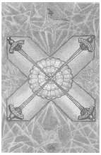
(Jupiter in Libra)
20° to 30° Libra
October 13 to October 22
Original Title: Lord of Rest from Strife.
Golden Dawn Model: The Four of Swords is exactly like the Two of Swords (including the rose of five petals and the white rays), except the hands that appear from clouds at the right and left hold two swords each.
Prince Scale for Chesed: Deep Purple.
The Four Scales for Jupiter: Violet; Blue; rich Purple; Bright Blue, rayed Yellow.
The Four Scales for Libra: Emerald Green; Blue; Deep Blue-Green; Pale Green.
Formula: 4 (Chesed) of Swords (Yetzirah) +Jupiter in Libra = TRUCE
The Four of Swords is perhaps the most beautiful of the small-card Swords. Harris executes a textbook use of the color scales and offers us a portrait of balance and order. She writes to Crowley: “I think it would be a good plan if you could arrange to come here one day next week & see the Swords. I have a superstitious horror of bringing them all unbalanced to London.285
Chesed is the sphere of Jupiter and serves as a gracious but authoritative host to Jupiter in Libra. Equilibrium and justice are definitely key words for this card, but Crowley tells us that it also brings with it the “establishment of dogma, and the law concerning it.”286 Swords are weapons, and weapons discharge their design by virtue of the disciplines of war, not of peace. The kind of “truce” the Four of Swords monitors is a peace enforced by the threat of violence, and as such will be short lived.
The four swords are arranged as a St. Andrew's cross, suggesting to Crowley “Fixation and rigidity.”287 Their points meet at the center of a large rose of forty-nine petals that Crowley tells us represents “social harmony.”288 It is the concord of conformity and compromise, however, that characterizes a culture that would rather blindly surrender to authority than to face the challenges of liberty.
See chapter 20 for the general divinatory meanings of this card.
FIVE OF SWORDS DEFEAT
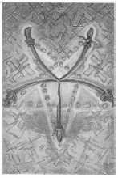
(Venus in Aquarius)
0° to 10° Aquarius
January 20 to January 29
Original Title: Lord of Defeat.
Golden Dawn Model: Three hands appear from clouds at the bottom card. The right and left hands hold two swords each, the center hand one. The image is that of the Three of Swords, but, in this case, the two swords to the right and to the left are violently parted by a central fifth sword. The rose is destroyed and its five petals are dispersed into the air. There are no white rays.
Prince Scale for Geburah: Bright Scarlet.
The Four Scales for Venus: Emerald Green; Sky Blue; Early Spring Green; Bright Rose or Cerise, rayed Pale Green.
The Four Scales for Aquarius: Violet; Sky Blue; Bluish Mauve; White, tinged Purple.
Formula: 5 (Geburah) of Swords (Yetzirah) + Venus in Aquarius = DEFEAT
This card presents five unmatched, bent, and damaged swords forming an averse pentagram. This pentagram of Defeat is projected upon a field of Harris's geometric and wildly asymmetric wings, some of which form swastikas. As this card was painted at the very height of England's struggle with Nazi Germany, it is easy to speculate that Harris was either consciously or unconsciously projecting magical defeat on this hated enemy. Her concern with the design is clear in her words to Crowley: “I only hope the Swords are alright for I can't do them again. I have followed your instructions with meticulous care.”289
Popular opinion holds that the averse pentagram is an evil symbol. The Golden Dawn even cautioned its initiates never to use it magically. Be that as it may, it is the pinnacle of superstition to believe that any symbol, in and of itself, can be either good or evil. The averse pentagram can be used to symbolize an infinite number of perfectly innocuous concepts. However, in this card it really does mean trouble.
Venus rules Aquarius and, for a moment, she is very happy to have him as her date. After all, they're both pacifists. They are a friendly, mellow, and sentimental couple. Unfortunately, this sensitive pair has shown up at the wrong party. A terrible fight has broken out in a very rough and well-armed area of Qabalahville—Geburah, the house of Mars, which is located in Yetzirah (the world of Swords).
Naturally, Venus and Aquarius volunteer to be peacemakers, but they are just too nice, too peaceful, too weak to handle themselves in this violent neighborhood. The inevitable result is Defeat. Sorry kids. I hear things are quieter down in Tiphareth.
See chapter 20 for the general divinatory meanings of this card.
SIX OF SWORDS SCIENCE
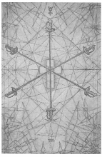
(Mercury in Aquarius)
10° to 20° Aquarius
January 30 to February 8
Original Title: Lord of Earned Success.
Golden Dawn Model: Two hands appear from clouds at the right and left side of the card. They each hold three swords like the air dagger of a Zelator Adeptus Minor. The swords cross in the center of the card. A red rose with five petals blooms where the swords touch. The rose emits white rays.
Prince Scale for Tiphareth: Rich Salmon.
The Four Scales for Mercury: Yellow; Purple; Grey; Indigo, rayed Violet. The Four Scales for Aquarius: Violet; Sky Blue; Bluish Mauve; White, tinged
Purple.
Formula: 6 (Tiphareth) of Swords (Yetzirah) + Mercury in Aquarius = SCIENCE
In chapter 8, we were introduced to the small Rose Cross at the heart of the Hermetic Rose Cross. I presumptuously labeled it the Rose Cross of Being. In the Six of Disks, this figure is found at the very center of the card, and six matched and balanced swords focus their powers of analysis and discrimination upon the mysteries of being. This is Science.
The conservative beauty of this card announces that the shining balance of Tiphareth brings a much-needed measure of nobility and clear-headedness to the suit of Swords. The formula that creates the character of this card couldn't be more auspicious for the suit of Swords. In the human soul, the counterpart of Yetzirah is the Ruach, or the intellect. On the Tree of Life, the center of the Ruach radiates from Tiphareth. Finally, an air planet, Mercury, finds itself in the fixed air sign of Aquarius.
Someone with Mercury in Aquarius in his or her natal horoscope is said to have a keen, analytical mind and an extraordinary ability to concentrate. He or she is also intensely curious and enjoys examining both sides of a question. Sounds like a scientist, doesn't it?
See chapter 20 for the general divinatory meanings of this card.
SEVEN OF SWORDS FUTILITY
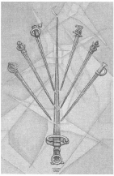
(Moon in Aquarius)
20° to 30° Aquarius
February 9 to February 18
Original Title: Lord of Unstable Effort.
Golden Dawn Model: Two hands appear from clouds at the right and left side of the card. They each hold three swords like the air dagger of a Zelator Adeptus Minor. A third hand holds up a single sword in the center. The points of all the swords touch each other, the central sword not altogether dividing them. The rose of five petals blooms on the blade of the center sword.
Prince Scale for Netzach: Bright Yellow Green.
The Four Scales for Moon: Blue; Silver; Cold Pale Blue; Silver, rayed Sky Blue.
The Four Scales for Aquarius: Violet; Sky Blue; Bluish Mauve; White, tinged Purple.
Formula: 7 (Netzach) of Swords (Yetzirah) + Moon in Aquarius = FUTILITY
For me, the Seven of Swords is often difficult to interpret in a tarot reading. One would think that a Sword card in Netzach would be absolutely awful. There are, however, embedded complexities in our formula that relieve this card of some of the more tortuous burdens that afflict the other sevens. For example, the very name of the seventh sephira is Victory. This may seem like grasping at straws, but Swords resonate well to words like victory. The Moon in Aquarius adds elements of change and the possibility of compromise. Crowley observes: “It is like a rheumatic boxer trying to “come back'' after being out of the ring for years.”290 Nonetheless, it is well to remember that, sometimes, even old boxers get in a lucky punch.
Harris chose to illustrate this as a planetary battle: six planets versus the Sun. Look closely at the swords. The hilts of the six small swords arrayed in a crescent near the top of the card carry the symbols of (from left to right) the Moon, Venus, Mars, Jupiter, Mercury, and Saturn. The large central sword is the Sun itself, outnumbered and battle-scarred. The entire arrangement, however, is orderly and restrained, almost suggestive of a moment when a negotiated settlement might be arranged.
I wouldn't bet on it.
See chapter 20 for the general divinatory meanings of this card.
EIGHT OF SWORDS INTERFERENCE
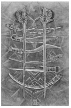
(Jupiter in Gemini)
0° to 10° Gemini
May 21 to May 31
Original Title: Lord of Shortened Force.
Golden Dawn Model: Four hands appear from clouds, each holding two swords, points upward; all the points touch near the top of the card. Hands issue, two at each bottom angle of the card. The rose is reestablished in the center.
Prince Scale for Hod: Red-russet.
The Four Scales for Jupiter: Violet; Blue; rich Purple; Bright Blue, rayed Yellow.
The Four Scales for Gemini: Orange; Pale Mauve; New Yellow leather; Reddish Grey inclined to Mauve.
Formula: 8 (Hod) of Swords (Yetzirah) + Jupiter in Gemini = INTERFERENCE
Harris out did herself in strict adherence to the color scales in this card. One would not expect a marriage of these colors to appear in art prior to the psychedelic blacklight styles of the 1960s. The blades of the swords seem actually to glow in the dark. As in most of the small cards of this suit, the swords appear upon of field of stylized wings—here looking almost like pinwheels.
Actually, this card is not as bad as it looks or its title implies Jupiter in Gemini indicates an element of luck in intellectual pursuits. Hod is the sphere of Mercury, who rules Gemini. As it does to the eights of the other suits, however, Hod's imbalanced and lowly position on the Tree of Life throws a wet blanket on what otherwise might have been a fortunate coupling. There is not enough Mercurial energy left to put up much of a fight, and in the suit of Swords, fighting is what it is all about. Crowley says, “the Will is constantly thwarted by accidental interference.”291
The Eight of Swords does not show us much patience or persistence. If its influence is to be overcome, those qualities will need to be developed and introduced into the equation. Otherwise, everything will most definitely serve to interfere. See chapter 20 for the general divinatory meanings of this card.
NINE OF SWORDS CRUELTY
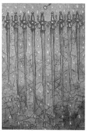
(Mars in Gemini)
10° to 20° Gemini
June 1 to June 10
Original Title: Lord of Despair and Cruelty.
Golden Dawn Model: From out of clouds on the left and right, four hands appear, each holding two swords nearly upright but with the points falling away from each other. From the bottom of the card, a fifth hand appears holding a ninth sword upright in the center, as if it had struck them apart. No rose at all is shown, seemingly having been utterly destroyed.
Prince Scale for Yesod: Very dark Purple.
The Four Scales for Mars: Scarlet; Red; Venetian Red; Bright Red, rayed Azure or Emerald.
The Four Scales for Gemini: Orange; Pale Mauve; New Yellow leather; Reddish Grey inclined to Mauve.
Formula: 9 (Yesod) of Swords (Yetzirah) + Mars in Gemini = CRUELTY
Oh, dear! Nobody expects the Spanish Inquisition! If you have a hangover, don't look at the Nine of Swords. You won't be ready to deal with this one. Who knows what Harris was doing with the colors, but she succeeded in making them perfectly nauseating. As if to underscore the degeneration of the suit, the pinwheel wings are being washed down the wall of the background by what look like drops of poison. The whole scene induces dizziness. I can almost taste the drops of rusty blood dripping from the swords.
It is kind of a surprise to find this horrible mess in middle-pillar Yesod. After all, the other nines are perfectly lovely fellows. But even the balance and stability of Yesod can't come to the rescue of all-action Mars—in all-talk Gemini—in the lowest burned-out region of Yetzirah, the world of thought. Watch out! It is, Crowley warns, “agony of mind.”292
The only outlet for expression for this card is just ugly meanness. There is not even enough subtlety of mind left, Crowley points out, to take sadistic pleasure from its own cruelty: “Consciousness has fallen into a realm unenlightened by reason. This is the world of the unconscious primitive instincts, of the psychopath, of the fanatic.”293
See chapter 20 for the general divinatory meanings of this card.
TEN OF SWORDS RUIN
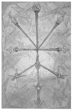
(Sol in Gemini)
20° to 30° Gemini
June 11 to June 20
Original Title: Lord of Ruin.
Golden Dawn Model: Four hands holding eight swords, as in the Nine of Swords, the points falling away from each other. Two hands hold two swords crossed in the center, as though their junction had disunited the others. No rose, flower, or bud is shown.
Prince Scale for Malkuth: Citrine; Olive; Russet; and Black; all with Gold, flecked Black.
The Four Scales for Sol: Orange; Gold Yellow; Rich Amber; Amber, rayed Red.
The Four Scales for Gemini: Orange; Pale Mauve; New Yellow leather; Reddish Grey inclined to Mauve.
Formula: 10 (Malkuth) of Swords (Yetzirah) + Sol in Gemini = RUIN
Can you find ten swords in the Ten of Swords? It's very difficult. Crowley tries to help us:
The hilts of the Swords occupy the positions of the Sephiroth, but points One to Five and Seven to Nine touch and shatter the bright central sword (six) which represents the Sun, the Heart, the child of Chokmah and Binah. The tenth sword is also in splinters.”294
There are three swords that form the middle pillar, the lowest having a crescent Moon on the handle. The next sword is placed upon the blade of the first and has an orb as part of its handle. The blade of the second sword is place upon the heart-shaped pommel of the central sword, whose blade is broken into three pieces.
It is difficult to put a good spin on this card. Harris herself reports, “I have done the 10 of Swords & promptly Russia takes up arms.”295 Along with the other tens, the Ten of Swords can't degenerate any lower without completely changing suits. Sol in Mercury-ruled Gemini brings a complete identification with the mind and the intellect, which, in this card, are in the very process of being destroyed. “It is the ruin of the Intellect,” Crowley intones, “and even of all mental and moral qualities.”296 Ouch!
See chapter 20 for the general divinatory meanings of this card.
TWO OF DISKS CHANGE
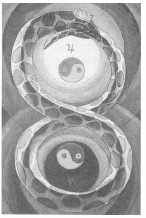
(Jupiter in Capricorn)
0° to 10° Capricorn
December 22 to December 30
Original Title: Lord of Harmonious Change.
Golden Dawn Model: In the center, a green and gold serpent with its tail in its mouth forms a figure 8. A hand appears from clouds on the left side of card and grasps the serpent where the two loops intersect. Within each loop is a disk, similar to that of the ace. There are no roses in this card.
Princess Scale for Chokmah: White-flecked red, Blue and Yellow.
The Four Scales for Jupiter: Violet; Blue; rich Purple; Bright Blue, rayed yellow.
The Four Scales for Capricorn: Indigo; Black; Blue-black; Cold Dark Grey, nearing Black.
Formula: 2 (Chokmah) of Disks (Assiah) +Jupiter in Capricorn = CHANGE
Even though Jupiter and Capricorn are not usually happy with each other, this high up on the Tree of Life, their differences are more or less forgiven. Crowley calls this card “the picture of the complete manifested Universe, in respect of its dynamics.”297
Like the twos of the other suits, this card, not the ace, represents the first manifestation of its element. Disks being earth and, as we recall, earth being the throne of spirit, we have in a very real sense completed a great cosmic circuit. “[H]aving got to the bottom, Crowley explains, “one immediately comes out again at the top. Hence, the card manifests the symbolism of the serpent of the endless band.”298 Crowley sings in his Liber LXV:
Then I beheld myself compassed about with the In finite Circle of Emerald that encloseth the Universe.299
As if to suggest the nuclei of the first dividing cells of what soon be the material universe, two yin-yangs whirl in the center of the two coils of the serpent; the top rotates to the left and contains within itself the symbols of fire and water; the bottom one rotates to the right and contains within itself the symbols of air and earth. Harris tells Crowley that she paid particular attention to the colors:
No 2 Disks is on the stocks, is the serpent's eye to be red? It is a bit awkward as there are several colours introduced in the card which do not belong to Jupiter and Capricorn, I mean the 4 elements colours and they make inharmonious patches. Did you say anything about jewels on the serpent? I think you will like him.”300
See chapter 20 for the general divinatory meanings of this card.
THREE OF DISKS WORK
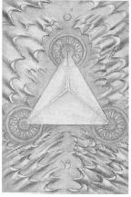
(Mars in Capricorn)
10° to 20° Capricorn
December 31 to January 9
Original Title: Lord of Material Works.
Golden Dawn Model: From clouds at the bottom of the card, a hand appears holding a branch of a rose tree. Three disks are arranged as an upright equilateral triangle. Crowning the top disk are two white rosebuds. The two lower disks appear right and left at the tips of green leaves.
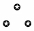
Princess Scale for Binah: Grey, flecked Pink.
The Four Scales for Mars: Scarlet; Red; Venetian Red; Bright Red, rayed Azure or Emerald.
The Four Scales for Capricorn: Indigo; Black; Blue-black; Cold Dark Grey, nearing Black.
Formula: 3 (Binah) of Disks (Assiah) + Mars in Capricorn = WORK
Although in The Book of Thoth Crowley consistently refers to this card as Work, the title that appears on Lady Harris's painting (and consequently the published editions of the Thoth Tarot) is Works. In either case, the factors that determine its character (Binah of Assiah, Mars in Capricorn) make this card, among all the abstract supernal triad small cards, the most un-abstract. In a very real way, the Three of Disks is the material heart of the three-stroke engine that drives the universe that we discussed in Atu X. Crowley says it is “the material establishment of the idea of the Universe, the determination of its basic form.”301
The image is an aerial view of a pyramid or tetrahedron firmly fixed on a desolate desert representing the great sea of Binah. The gray sand dunes seem to have been formed by blasts of energy emanating from the structure, which itself is supported by three great wheels. Although they are very small and difficult to see, the symbols of the alchemical elements mercury, sulfur, and salt appear in the hubs of the three wheels, suggesting the eternal universe-sustaining competition of the three gunas of the Hindu system.302
See chapter 20 for the general divinatory meanings of this card.
FOUR OF DISKS POWER
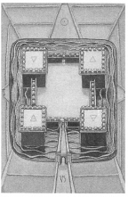
(Sol in Capricorn)
20° to 30° Capricorn
January 10 to January 19
Original Title: Lord of Earthly Power.
Golden Dawn Model: From clouds at the bottom of the card, a hand appears holding a branch of a rose tree. There are no flowers or buds other than one white rose in the center in full bloom. Disks are arranged as if on the points of a square.
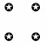
Princess Scale for Chesed: Deep Azure, flecked Yellow.
The Four Scales for Sol: Orange; Gold Yellow; Rich Amber; Amber, rayed Red.
The Four Scales for Capricorn: Indigo; Black; Blue-black; Cold Dark Grey, nearing Black.
Formula: 4 (Chesed) of Disks (Assiah) + Sol in Capricorn = POWER
This card is well named. It is Sol in Capricorn, and to the ancients, the greatest display of celestial power occurred each year when the Sun entered Capricorn and conquered death by reversing its southward plunge into darkness. In The Book of Thoth, Crowleys describes how “Chesed shows the establishment of the Universe in three dimensions, that is, below the Abyss.”303 In “The Rite of Saturn,” he calls it “The Fortress that is upon the Frontier of the Abyss.”304 This is a perfect description of the Four of Disks.
To properly view this card, we must imagine ourselves hovering hundreds of feet above a foursquare walled citadel surrounded by a wide moat. We are approaching from the bottom of the card and are not yet above dead center. Four tall watch-towers crowned with battlements displaying the symbols of the elements rise from the corners and tower far above the walls. The main entrance to the fortress is seen at the bottom of the card; a fortified bridge crosses the moat. From this angle, we can only see one other entrance, a tiny opening (that does not lead to a bridge) in the opposite wall. Similar openings may exist in the walls on the right and left, but, from our aerial position, it is impossible to tell. However, we are tantalized by what appear to be roads leading up to the moat from the three other quarters, possibly an indication of other openings. The imagery of this card certainly leaves us with many mysteries unsolved.
See chapter 20 for the general divinatory meanings of this card.
FIVE OF DISKS WORRY
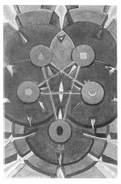
(Mercury in Taurus)
0° to 10° Taurus
April 21 to April 30
Original Title: Lord of Material Trouble.
Golden Dawn Model: From clouds at the bottom of the card, a hand appears holding a branch of a white rose tree. The roses are falling, leaving no buds on the tree. Four disks similar to the ace are arranged in the form of a square with a fifth disk in the center.
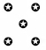
Princess Scale for Geburah: Red, flecked Black.
The Four Scales for Mercury: Yellow; Purple; Grey; Indigo, rayed Violet.
The Four Scales for Taurus: Red Orange; Deep Indigo; Deep warm Olive; Rich Brown.
Formula: 5 (Geburah) of Disks (Assiah) + Mercury in Taurus = WORRY
Despite Mercury's active nature and Taurus's tendency to be a bit sluggish, this is not an overly difficult match. People with this aspect in their natal horoscopes are often very patient, practical, and conservative. However, Geburah throws a disturbing and stressful monkeywrench into the mechanism of this otherwise stable device. The natural result is worry, the kind of worry that has you asking, “Am I being pulled into a predicament I can't get out of? Am I in over my head? Will I be crushed by the blind momentum of this situation?
The surface of this card cannot contain the full images of five ponderous gear wheels laid one upon another like the inner workings of a huge and grotesque clock. What appear as five disks in the center of the card are actually only the hubs of these massive wheels. The five hubs are arranged as an averse pentagram, each containing one of the five Hindu tattva symbols of the elements: red triangle of fire, silver crescent of water, blue circle of air, yellow square of earth, and the black egg of spirit. If we look closely, we see that the black egg of spirit is upon the downward point of the pentagram. It is clear that the Five of Disks is pointing to the more nasty meaning of the averse pentagram, that of the triumph of matter over spirit.305
See chapter 20 for the general divinatory meanings of this card.
SIX OF DISKS SUCCESS
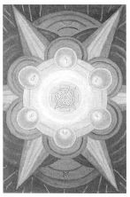
(Moon in Taurus)
10° to 20° Taurus
May 1 to May 10
Original Title: Lord of Material Success.
Golden Dawn Model: From clouds at the bottom of the card, a hand appears holding a rose branch with white roses and buds, each of which touches a disk. Disks are arranged in two columns of three each, thus:
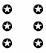
Princess Scale for Tiphareth: Gold Amber.
The Four Scales for Moon: Blue; Silver; Cold Pale Blue; Silver, rayed Sky Blue.
The Four Scales for Taurus: Red Orange; Deep Indigo; Deep warm Olive; Rich Brown.
Formula: 6 (Tiphareth) of Disks (Assiah) + Moon in Taurus = SUCCESS
All things considered, things don't get any better than this in the suit of Disks. The Moon is exalted in Taurus and eminently happy to be there. As change is the Moon's primary characteristic, however, we may not have much time to enjoy our success. On the other hand, Tiphareth, as always, comes to the rescue:
It represents consciousness in its most harmonized and balanced form; definitely in form, not only in idea, as in the case of the number Two. In other words, the Son is an interpretation of the Father in terms of the mind.306
For this reason, it is interesting to compare this card with the Ace of Disks, because, in a very real sense, the Six of Disks is an interpretation of the Ace of Disks in terms of the mind. In this, the most earthy and material suit, six (Tiphareth) applies its noble and stable influence toward practical ends—it is a brief reward for the tireless (if somewhat mindless) hands-on labor of the entrepreneur.
The basic image is that of the hexagram we found on the white section of the lower arm of the Hermetic Rose Cross (see chapter 8)—the Sun surrounded by the other six planets of the ancients. Here the Sun of Tiphareth is represented by the rose of forty-nine petals crucified upon a cross of five squares. This device, long associated with the Sun in magical and Masonic symbolism, is surrounded by three concentric rings of golden yellow, salmon-pink, and amber, which, in some reproductions, are hard to see.
In a tarot reading, this card acts somewhat like a Midas touch—bringing to neighboring cards the prospect of actually manifesting their qualities on the material plane.
See chapter 20 for the general divinatory meanings of this card.
SEVEN OF DISKS FAILURE
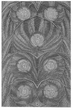
(Saturn in Taurus)
20° to 30° Taurus
May 11 to May 20
Original Title: Lord of Success Unfulfilled.
Golden Dawn Model: From clouds at the bottom of the card, a hand appears holding a rose branch. There are only five buds, which overhang, but do not touch the five uppermost disks. The disks are arranged thus:
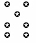
Princess Scale for Netzach: Olive, flecked Gold.
The Four Scales for Saturn: Indigo; Black; Blue-black; Black, rayed Blue.
The Four Scales for Taurus: Red Orange; Deep Indigo; Deep warm Olive; Rich Brown.
Formula: 7 (Netzach) of Disks (Assiah) + Saturn in Taurus = FAILURE
This card presents an image of cold, stark beauty. That, I'm afraid, is the best thing that can be said about it. Try as I may, I can't find one kind word from Crowley concerning Failure. But honestly, have any of the sevens really thrilled us? We have to hand it to Lady Harris, though. She did a marvelous job of setting seven leaden coins (“They suggest bad money,” Crowleys explains.307) struck with the symbols of Saturn and Taurus in a world of dead and blackened vegetation. They form the geomantic figure Rubeus, which Crowley describes as “the most ugly and menacing of the Sixteen.”308
One look at our formula tells us we are in for trouble. Netzach, the sphere of dreamy-eyed prima donna Venus has, as Crowley puts it, “its customary enfeebling effect.”309 And cold, heavy Saturn, in slow, earthy Taurus adds jack-booted insult to unimaginative injury. Crowley summarizes the dark imagery of the card:
There is no effort here; not even dream; the stake has been thrown down, and it is lost. That is all Labour itself is abandoned; everything is sunk in sloth.310
When the Seven of Disks shows up in a tarot reading, you better hope your question was “What's going to happen to my worst enemy?”
See chapter 20 for the general divinatory meanings of this card.
EIGHT OF DISKS PRUDENCE
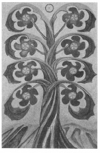
(Sol in Virgo)
0° to 10° Virgo
August 23 to September 1
Original Title: Lord of Prudence.
Golden Dawn Model: From clouds at the bottom of the card, a hand appears grasping a branch of a rose tree with four white roses on it. They touch only the four lowermost disks. Leaves touch the four uppermost disks. The disks are arranged thus:
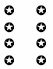
Princess Scale for Hod: Yellowish-Brown, flecked White.
The Four Scales for Sol: Orange; Gold Yellow; Rich Amber; Amber, rayed Red.
The Four Scales for Virgo: Green (yellowish); Slate Grey; Green Grey; Plum color.
Formula: 8 (Hod) of Disks (Assiah) + Sol in Virgo = PRUDENCE
Why is the Eight of Disks, Prudence, so inoffensive, while the Seven of Disks, Failure, is so perfectly awful? Both cards are low on the Tree of Life, and off the middle pillar. The formula explains it all.
Hod is the sphere of Mercury. Mercury both rules and is exalted in Virgo. Virgo is the mutable zodiac sign (and therefore the stabilizing influence) of Earth. Earth is the element of Assiah and the suit of Disks. (Isn't this cozy?) And finally, the Sun radiates its life-giving rays upon all this mental (Mercury) fertility (Virgo/earth).
Of course, everything isn't perfect. The number eight position is still unbalanced and weak. There are enough mitigating factors, however, to make Crowley comment that this card “signifies intelligence lovingly applied to material matters, especially those of the agriculturist, the artificer and the engineer.”311
The disks are plum-colored blossoms of a thick-stalked tree firmly planted in the earth. Like the disks in the Golden Dawn model, they are arranged to suggest the figure Populus, which is one of two geomantic symbols representing the Moon. In all candor, I am unsure why this is so. Perhaps because of the Moon's association with the planting of crops.
This card is well named, for prudence is a passive activity. It is calculating. Plant and wait. Wait and see. Bet—but only if you've fixed the game.
See chapter 20 for the general divinatory meanings of this card.
NINE OF DISKS GAIN
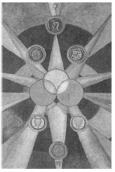
(Venus in Virgo)
10° to 20° Virgo
September 2 to September 11
Original Title: Lord of Material Gain.
Golden Dawn Model: From clouds at the bottom of the card, a hand appears holding a rose branch with nine white roses, each of which touches a disk. The disks are arranged thus:
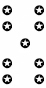
Princess Scale for Yesod: Citrine, flecked azure.
The Four Scales for Venus: Emerald Green; Sky Blue; Early Spring Green; Bright Rose or Cerise, rayed Pale Green.
The Four Scales for Virgo: Green (yellowish); Slate Grey; Green Grey; Plum color.
Formula: 9 (Yesod) of Disks (Assiah) + Venus in Virgo = GAIN
Oh, how happy I am to see this card when the question concerns material matters! I don't care how unspiritual it sounds, I love this card! Six small coins, stamped with remarkably detailed and imaginative personifications of the planets, surround a large unmarked solar orb that is interlaced with two companion disks of the same size. Few cards of the Thoth Tarot bear less resemblance to Crowley's description in The Book of Thoth than this one. I have to conclude that his words were part of his original instructions to Harris and not an account of the finished product.
Be that as it may, the Nine of Disks is a balanced and beautiful interpretation of what most people on this planet think of as good luck. Crowley even uses the words “good luck” twice in his comments:
This card is ruled by Venus in Virgo. It shows good luck attending material affairs, favour and popularity…the mingling of “good luck and good management.”312
Yesod of Assiah is such a low position in the lowest of the four Qabalistic worlds that its lowness is actually an asset. We are talking big-time payoff on the material plane, and we are blissfully insensitive to concerns and anxieties that plagued us throughout the cards of the other suits. “The suit of Disks,” Crowley observes, “is much too dull to care; it reckons up its winnings; it does not worry its head about whether anything is won when al is won.”313
See chapter 20 for the general divinatory meanings of this card.
TEN OF DISKS WEALTH
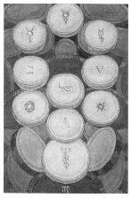
(Mercury in Virgo)
20° to 30° Virgo
September 12 to September 22
Original Title: Lord of Wealth.
Golden Dawn Model: From clouds at the bottom of the card, a hand appears holding the branch of a rose tree whose roses touch all the disks. No buds, however, are shown. The disks are arranged thus:
Princess Scale for Malkuth: Black, rayed with Yellow.
The Four Scales for Mercury: Yellow; Purple; Grey; Indigo, rayed Violet.
The Four Scales for Virgo: Green (yellowish); Slate Grey; Green Grey; Plum color.
Formula: 10 (Malkuth) of Disks (Assiah) + Mercury in Virgo = WEALTH
The Ten of Disks represents the climax of the descent of matter and is the signal for the redintegration by spirit. Crowley calls this card “a hieroglyph of the cycle of regeneration.”314 It is, after all, the last tarot card. It represents the lowest sphere (Malkuth-Earth) of the lowest Qabalistic world (Assiah-the material plane). The tens of the other suits have somewhere to go. They simply cooperate with gravity and degenerate into the next lower suit. For the Ten of Disks, there is no place to descend, no place to grow, no place to go. The Ten of Disks is forced to do something that no other small card is called upon to do. From its position at the bottom of the cosmos, it has somehow to form a link with the secret of creation, then actually reincarnate fresh and new at the very top of the tarot cycle.
In other words, it must regenerate the world. That's some trick, and it's going to take the biggest trickster in the universe to help pull it off. But let's first take a look at the card.
Lady Harris's interpretation is almost comically poignant: a Tree of Life made entirely of massive and heavy coins, its Malkuth bulging at the bottom as if the forces and energies of all the tarot cards, all the sephiroth and paths, all the Qabalistic worlds have settled into it like the tired sediment of the entire universe. For lack of a more gentile allusion, this card is the portrait of cosmic constipation. A magical laxative will need to be administered to prevent this stagnant wealth of energy, experience, and matter from putrefying and poisoning the body.
Is there a doctor in the house?
Yes! The best doctor in the universe—the god of physicians and magicians, the god who, tradition informs us, invented the tarot—Thoth-Hermes-Mercury!
This is perfect! For a job like this, his credentials are amazing. First of all, as Mercury, the Magus, he knows his way around the supernal triad. (Remember that the path of Mercury is above the Abyss and joins Kether to Binah.) As Hermes, he descended to the lowest region of the Land of the Dead and returned to Olympus with Persephone to regenerate the cycle of seasons. If he could do that, jump-starting the Ten of Disks is going to be a piece of cake! His greatest credential is that he is Thoth—the inventor and sustainer of this entire tarot universe.315
As if to attract Mercury's attention so that he may perform this most necessary magick, Harris painted this card as a veritable invocation of Material. All the sephiroth but one bear an image or word sacred to Mercury:
- Kether—we find the most common symbol of the planet Mercury;
- Chokmah—the symbol of Mercury as the Magus (Note that the right-angled positions of the arms are identical to the gesture made by the Magus in Atu I.);
- Binah—the symbol of alchemical Mercury;
- Chesed—the letter Pa, the Enochian equivalent of the letter “B” (Harris associated this with the Hebrew letter Beth which is assigned to Mercury);
- Geburah—the Hebrew letter Beth;
- Tiphareth—the name of Raphael (written in Hebrew), the ruling angel of Mercury;
- Netzach—the eight-pointed star of Mercury;
- Hod—the hexagram within the hexagon, symbol of the Sun (see below);
- Yesod—the Pythagorean Tetractys;
- Malkuth—the Mercurial caduceus made from the three mother letters of the Hebrew alphabet.
Why do all the sephiroth contain an image of Mercury except Hod, the sphere of Mercury itself? That is a very good question. Crowley mentions it as being the key to this remarkable regenerative process:
These disks are inscribed with various symbols of mercurial character, except that the coin in the place of Hod (Mercury) on the Tree is marked with the cipher of the Sun. This indicates the only possibility of issue from the impasse produced by the exhaustion of all the elemental forces.316
I take this to mean that, at this stage of the game, Mercury needs inspiration and direction. Crowley said it most succinctly:
When wealth accumulates beyond a certain point, it must either become completely inert and cease to be wealth, or call in the aid of intelligence to use it rightly.…In this way, Carnegie establishes a Library, Rockefeller endows Research, simply because there is nothing else to do.317
By plugging in the Sun in the sphere of Mercury, in a Tree of Life otherwise loaded with Mercury, Harris is calling in the aid of intelligence to give this card the spiritual integrity necessary to regenerate the world and become the ultimate cosmic philanthropist.
See chapter 20 for the general divinatory meanings of this card.
How I should like to do them all again.318
—Harris to Crowley, date uncertain.